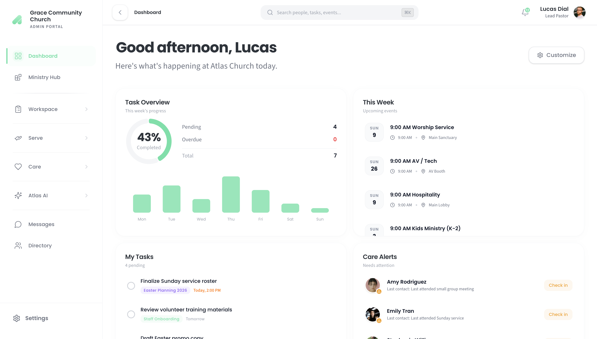

Now Accepting Founding Churches
Ministry Made Simple.
Clear. All In One Place.
One platform. Every tool your church needs to run, grow, and care for your people without the complexity.
One platform. Every tool your church needs to run, grow, and care for your people without the complexity.
Atlas connects every part of your church - people, planning, care, and communication - through one integrated platform built to carry the weight of ministry.

Our platform brings everything you need into one seamless workspace — manage your personal tasks and team meetings, drive projects from kickoff to completion, and plan events with ease, all without switching between tools. A centralized file library keeps your documents organized and always within reach, while the monthly calendar view gives you a clear picture of what's ahead, so you and your team can stay aligned, prepared, and in control at every step.
Our Serve section gives you everything you need to build and sustain a thriving volunteer culture — the Onboarding feature walks new volunteers through a fully customizable training pathway so every person is set up for success from day one, while Scheduling makes it simple to place the right people in the right roles for upcoming events without the back-and-forth. Team Health rounds it all out with a clear overview of your volunteer base, helping you spot signs of burnout before they become a problem and ensuring your team stays energized, engaged, and cared for over the long haul.
Our Care section equips your team to love and serve your congregation with intention — the Care Journal keeps a detailed record of each person's needs so nothing slips through the cracks, while the Follow-Ups list turns those needs into clear, actionable steps so the right people get reached out to at the right time. The Prayer Wall creates a shared space where members can post and see prayer requests, fostering a culture of transparency, intercession, and community support all in one place.
Atlas AI is your intelligent command center, always on and ready to work — the Chat With feature lets you pull data from anywhere across the platform in seconds, whether you need a quick answer or want to take action like creating a task and adding it straight to your list for today. But Atlas goes beyond conversation; as a fully capable agent, it can run predetermined sequences of actions automatically through custom Workflows you build yourself, handling the repetitive and time-consuming work in the background so you can stay focused on what matters most. With Atlas AI, the platform doesn't just store your information — it actively works with you to move things forward.
The Ministry Hub gives you a bird's-eye view of every ministry within your organization, bringing them all together in one central space so leadership can stay informed, connected, and aligned across the board. Rather than navigating siloed teams and scattered information, the Hub serves as the heartbeat of your organization — a single place to see how every ministry is operating, growing, and contributing to the mission as a whole.
What truly sets the platform apart is the Universal Reference System — a smart linking layer that runs beneath every section and turns the way your team communicates into a connected, clickable experience. Whether you're typing a message, writing a note, or logging an update, any mention of an event, person, project, or resource can be instantly tagged and linked, so the recipient can click directly through to that event board, user profile, or wherever it lives on the platform. No more hunting through menus or asking "where was that?" — the Universal Reference System makes every corner of the platform instantly accessible from wherever you already are, keeping your team moving with context, clarity, and zero friction.
No technical background required. We designed Atlas so any pastor can be fully set up and using it the same day they sign up.
Head to our pricing page to see what tier is right for your organization.
Pricing Page →Create your account, then create your organization. Takes less than five minutes.
You will be prompted with a few questions to customize what you see on your dashboard.
Start your free 30-day trial. No credit card required. Cancel anytime.